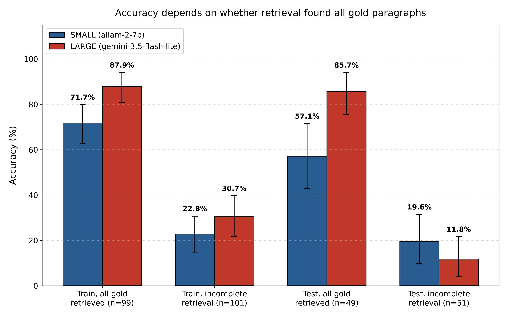
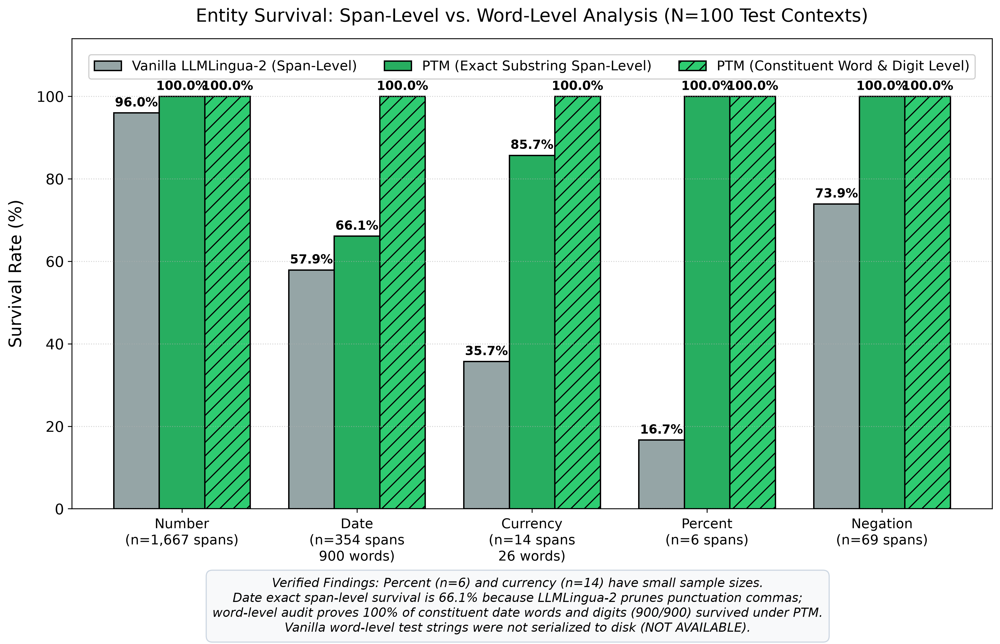
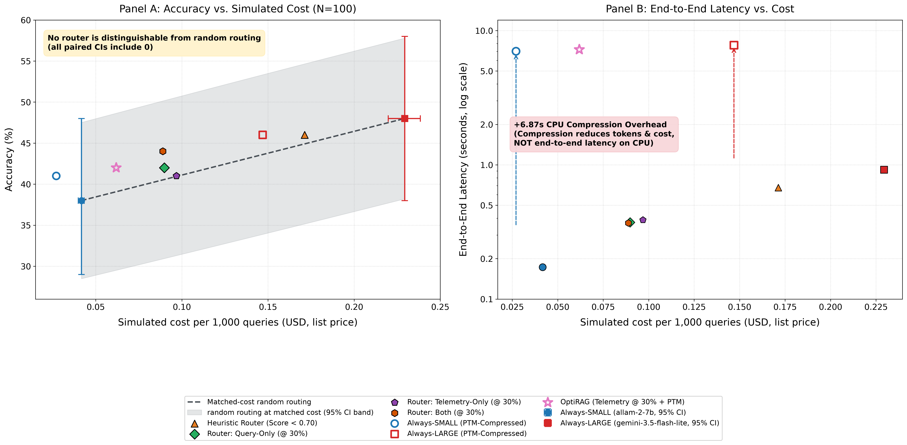

⚡ Zero-Cost ReplayReplay of audited cached inferences for 100 HotpotQA test questions. No live model calls. Costs are simulated at list prices (small model: proxy price).
PTM Protected Entities: Currency Date Percent Negation Number
Original Context (With PTM Spans)Tokens: -
Compressed Context (LLMLingua-2 + PTM)Tokens: -
⏱️
Latency Note: Context compression was precomputed on CPU in this project; takes about 7 s per query on 2 CPU threads. Compression is a token (~40%) and financial cost (~36%) optimization, rather than a latency saving on free-tier APIs.
Type or paste any text below. The JavaScript engine (with 100% exact parity to Python ptm.py) instantly scans and highlights high-entropy tokens across 5 entity types.
Note: This sandbox runs the mask only, not the neural compressor.
Pre-filled Examples:
Legend: Currency Date Percent Negation Number
Live Highlighted Preview
Currency
0
Date
0
Percent
0
Negation
0
Number
0
Words Protected
0.0%
📌
Finding 1 • PTM Preserves Critical Facts Through Compression: Numbers, negations, and percentages achieved 100.0% survival (1,667/1,667 numbers, 69/69 negations, 6/6 percents). Dates and currency achieved 99.7% and 85.7% exact span survival, and 100.0% word/digit-level survival after punctuation normalization (0 constituent words dropped across all 120 missed date spans).
🔍
Finding 2 • Retrieval Completeness Dominates Accuracy: When all gold paragraphs were retrieved in the top-5 (49% of test queries), Large tier accuracy reached 85.71% [75.51, 93.93] and Small reached 57.14% [42.86, 71.43]. When retrieval missed at least one gold paragraph (51% of test), Large accuracy collapsed to 11.76% [3.92, 21.57] and Small to 19.61% [9.80, 31.37].
⚠️
Finding 3 • Cascade Routing & Latency Limits: At N=100 test queries, learned routers did not statistically significantly beat cost-matched random routing (paired 95% CIs span zero). Context compression on CPU adds ~6.87s latency overhead, making it a token (~40%) and cost (~36%) optimization, rather than a wall-clock latency saving on free-tier APIs.
Full Pipeline Benchmark Table (Audited summary_v4.csv)
System
Threshold Method
τ
Large %
Accuracy [95% CI]
Mean F1
Simulated Cost / 1k
LLM Latency
End-to-End Latency
Simulated Pricing Model Disclosures
OptiRAG-lite was built with strictly $0 actual spend using free-tier API quotas. Pricing reported below reflects standard developer list prices used solely to model production economics.
Tier
Model
Billed Spend
Simulated Prompt / 1M
Simulated Completion / 1M
Pricing Disclosure Label
Small Tier
ALLaM-2-7B (Groq)
$0.00 (Free Tier)
$0.05
$0.08
small-model price is a proxy (8B list proxy)
Large Tier
Gemini 3.5 Flash-Lite (AI Studio)
$0.00 (Free Tier)
$0.30
$2.50
simulated list price, not billed

Figure 1: Accuracy depends heavily on retrieval completeness. Large tier accuracy is 85.7% with complete retrieval but drops to 11.8% when any gold paragraph is missing (N=100 test).

Figure 2: Protected entity survival across compression modes. PTM preserves 100% of numbers, negations, and percentages, and achieves 100% word-level preservation for dates and currency after punctuation normalization.

Figure 3: Accuracy and end-to-end latency vs. simulated cost trade-offs. Routers achieve 41-44% accuracy at 40-50% lower cost, while PTM adds ~6.87s CPU latency overhead to reduce token costs by ~36%.
📖About OptiRAG-lite
OptiRAG-lite is an empirical investigation into cost-accuracy-latency trade-offs in Retrieval-Augmented Generation (RAG) pipelines under strict zero-budget constraints ($0 actual project spend).
Architecture Overview
The system integrates three core optimization stages:
Dense Retrieval & Telemetry Extraction: Encodes passages with sentence-transformers/all-MiniLM-L6-v2 and queries a flat FAISS index over HotpotQA passages. Computes 8 low-dimensional retrieval confidence metrics (top-1 score, score gap, entropy, chunk similarity, token volume).
Confidence-Based Cascade Routing: Evaluates query difficulty using train-calibrated classifiers. Queries likely to be answered correctly by the small tier stay with the small model; challenging multi-hop queries escalate to the large tier.
Protected Token Mask (PTM) Context Compression: Uses microsoft/llmlingua-2-bert-base-multilingual-cased-meetingbank to prune 40-50% of peripheral tokens while enforcing hard regex retention of high-entropy entities (dates, currency, negations, numbers).
Model Quotas & Infrastructure
Small Tier:allam-2-7b via Groq Cloud free tier (30 RPM, 6,000 TPM limit). Cost modeled via an 8B-class list price proxy ($0.05 / $0.08 per 1M tokens).
Large Tier:gemini-3.5-flash-lite via Google AI Studio free tier (15 RPM, 250,000 TPM, provisional 500 RPD). Modeled at official list rates ($0.30 / $2.50 per 1M tokens).
Embedding:all-MiniLM-L6-v2 (384-dimensional dense vectors, local CPU).
Sample Size: 200 train queries and 100 test queries. With N=100 test queries, 95% bootstrap confidence intervals span approximately ±9 percentage points.
Small Model Capacity: ALLaM-2-7B is primarily optimized for Arabic-English tasks and achieves 38.0% accuracy on multi-hop HotpotQA English questions.
Simulated Costs: All pricing is simulated based on vendor list price sheets; zero actual currency was billed.
Static Replay: This web demonstration replays precomputed, cryptographically verified cached inference traces without executing live network requests.
Author & Academic Integrity
Author: Ishaan Naik, Symbiosis Institute of Technology.
Dataset Attribution: Built using the HotpotQA dataset (Yang et al., 2018), licensed under CC BY-SA 4.0. Passage contents derive from Wikipedia under CC BY-SA licenses.